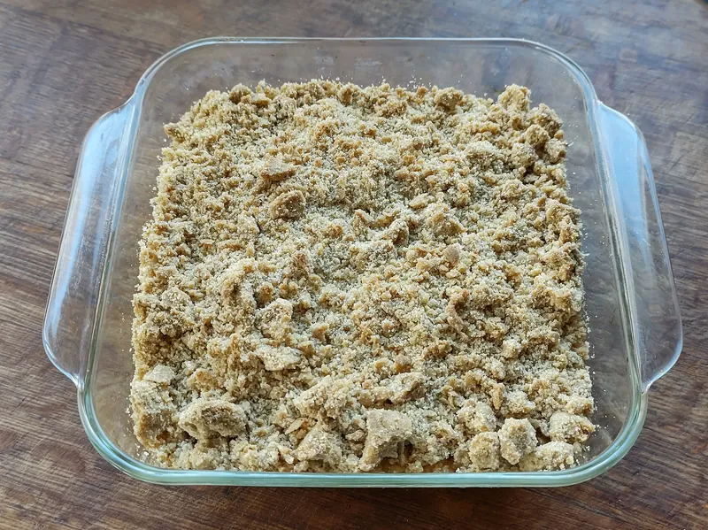
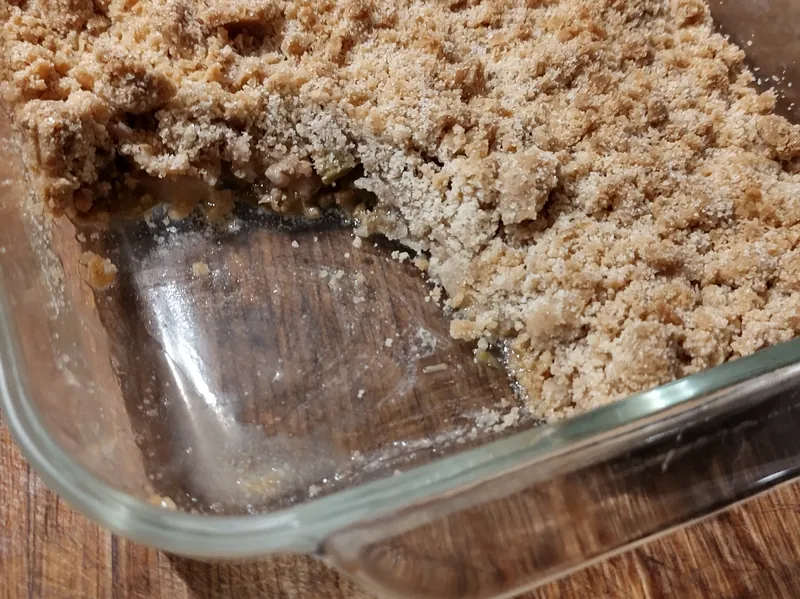

Autumn · pudding · serves 6
Apple Crumble with an Oat Topping
Two kinds of apple, because one collapses and one holds, under a topping with enough oats in it to stay crisp overnight. Twenty-five minutes of work and an hour in the oven.

Two apples, not one
A crumble made entirely from one variety of apple is always slightly disappointing, and the reason is structural. Soft apples — McIntosh, Cortland, most of what gets sold as a "cooking apple" — break down into sauce in about twenty minutes. That sauce is good: it is what fills the gaps and holds the whole thing together. But a dish of nothing but sauce under a crust has no texture and tastes flat.
Firm apples — Granny Smith, Braeburn, Honeycrisp, Northern Spy — hold their shape through an hour in the oven and come out as distinct pieces. A dish of nothing but those is the opposite problem: chunks of hot fruit rattling about with nothing between them.
Half and half fixes both. The soft ones collapse into a thick sauce and the firm ones sit in it as recognisable pieces of apple. If you can only get one kind, use firm apples and add two tablespoons of water, which gives the pan enough liquid to make a little sauce of its own.
Why oats, and why not to press the topping
A plain flour-butter-sugar topping is essentially shortbread crumbs. It is delicious for about forty minutes and then the steam coming up from the fruit softens it from below and it turns to paste. Oats resist that. They are dry, they are structurally rigid, and they hold a crisp texture well into the next day. A crumble made with a third oats by volume will still have a crunchy surface at breakfast, which is the correct time to eat leftover crumble.
Use rolled oats, not quick oats. Quick oats are rolled thinner and cut smaller so they hydrate almost instantly and go gluey. Rolled oats keep their shape.
And do not press the topping down. It is tempting — a smooth, packed surface looks tidy going into the oven. It bakes into a solid lid. Scatter the topping loosely in clumps of varying size, leave gaps for the steam to escape through, and let it look untidy. Untidy is correct.

Apple Crumble with an Oat Topping
Equipment
- A baking dish of about 2 quarts — a 9-inch square or an 8 by 11-inch oval both work
- A large bowl for the topping and another for the fruit
- A peeler and a sharp paring knife
- A baking sheet to stand the dish on
Ingredients
Fruit
- 1 1/2 lbfirm apples (3 medium) — Granny Smith, Braeburn or Honeycrisp
- 1 1/2 lbsoft apples (3 medium) — McIntosh or Cortland
- 1/3 cuplight brown sugar, packed (2.5 oz)
- 1 Tbsplemon juice, fresh
- 1 Tbspall-purpose flour
- 3/4 tspground cinnamon
- 1/8 tspfine sea salt
Oat topping
- 5 ozall-purpose flour (about 1 cup, spooned)
- 1 cuprolled oats, not quick oats (3.2 oz)
- 1/2 cuplight brown sugar, packed (3.8 oz)
- 1/4 tspfine sea salt
- 1/4 tspground cinnamon
- 5 ozunsalted butter (10 Tbsp), cold, cut into cubes
Method
- Heat the oven to 375°F with a rack in the middle. Butter the baking dish lightly and set it on a baking sheet — fruit crumbles bubble over more often than people expect.
- Make the topping first, so it can go back in the refrigerator while you deal with the apples. Rub the flour, oats, brown sugar, salt and cinnamon together, then add the cold butter and rub it in with your fingertips until the mixture clumps when you squeeze a handful but still has loose crumbs running through it. Lumps the size of a pea up to the size of a hazelnut are what you want. Refrigerate.
- Prepare the fruit. Peel, quarter and core all the apples, then cut them into pieces about 3/4 inch thick. Keep them chunky; thin slices disappear.
- Toss the apples with the brown sugar, lemon juice, flour, cinnamon and salt until everything is coated. Tip into the dish and level it roughly. It will look like far too much fruit. It is not; it settles by about a third.
- Scatter the topping loosely over the fruit in uneven clumps, right to the edges. Leave it rough and leave gaps. Do not press it down.
- Bake for 55 to 65 minutes. It is done when the topping is deep golden brown all over and the fruit juice is bubbling up thickly around the edge — thick slow bubbles, not thin fast ones. If the top is dark before the fruit is bubbling, lay a sheet of foil over it loosely and carry on.
- Rest for 15 minutes before serving. Straight out of the oven the fruit is hot enough to be unpleasant and the juice has not settled.
Make it easier
- Make the topping in quantity. It freezes raw in a bag for 3 months and goes straight from the freezer onto the fruit with 5 minutes added to the bake. A bag of it in the freezer turns this into a ten-minute recipe.
- Do not bother coring neatly. Quarter the apple, lay each quarter flat and take the core off with one straight cut. Faster than any gadget and you lose less fruit.
- If your hands run warm, use two knives or a pastry blender to cut the butter in, or pulse the topping in a food processor six or seven times — no more, or it becomes dough.
- Half quantities work fine in a 1-quart dish; bake for 40 to 45 minutes.

Storage and reheating
Covered loosely, it keeps 4 days in the refrigerator and 3 months in the freezer. Reheat it uncovered at 350°F for 20 minutes from chilled or 40 minutes from frozen. Uncovered matters: a lid traps steam and the oats go soft, which is the one thing this topping was chosen to avoid.
Cold crumble out of the refrigerator with a spoon, standing at the counter, is a legitimate way to eat it and needs no defence.
Making it ahead
Assemble the whole thing, unbaked, cover it and refrigerate for up to 24 hours, then bake from cold with 10 minutes added. Longer than a day and the fruit gives up too much liquid and wets the underside of the topping. If you want to go further ahead than that, freeze the topping separately and prepare the fruit on the day.
Substitutions
Pears. Swap up to half the apples for firm pears. They carry more water, so increase the flour in the fruit from 1 tablespoon to 2. There is a blackberry and pear version of this in the cookbook.
Blackberries or raspberries. Up to 1 1/2 cups folded in with the apples. Add 1 extra tablespoon of flour. The juice turns a good colour.
Rhubarb. Replace up to half the soft apples with rhubarb cut into 1-inch lengths and increase the brown sugar in the fruit to 1/2 cup. Rhubarb is much more sour than it looks.
Gluten-free. Use a cup-for-cup gluten-free blend in both the fruit and the topping and check that your oats are certified gluten-free, since ordinary oats are usually milled alongside wheat. The topping browns a shade faster.
Dairy-free. A firm block-style plant butter works in the topping. Soft tub spreads do not — too much water, and the topping spreads into a sheet instead of staying as crumbs.
Nuts. 1/2 cup of chopped pecans or almonds stirred into the topping is good. Add them at the end so they do not get rubbed to dust.
If something goes wrong
The topping is pale and soft. Underbaked, nearly always. Deep golden brown is the target and most people pull it at light gold. Put it back for another ten minutes.
It is swimming in juice. Very juicy apples, or the flour got left out of the fruit. Next time use 2 tablespoons. This time, spoon the excess juice off, boil it down in a small pan for three minutes and pour it back.
The fruit is still firm. The pieces were cut too large or the oven runs cool. Cover with foil and give it another fifteen minutes.
The topping is one solid sheet. It was pressed down, or the butter was too soft when it went in. Cold butter, light hands, loose scatter.
Allergens
As written this recipe contains wheat (gluten) and dairy (butter). Oats are naturally gluten-free but are commonly milled on shared equipment, so standard oats should be treated as containing gluten unless the package says otherwise. Adding nuts introduces tree nuts.
This line describes the recipe, not your shopping. Formulations change without notice, so check the label on every package you actually buy. If you are not certain about a product, do not use it.
Nutrition estimate
| Item | Estimate |
|---|---|
| Calories | 498 kcal |
| Total fat | 20 g |
| Saturated fat | 12 g |
| Carbohydrate | 77 g |
| Sugars | 45 g |
| Fibre | 6 g |
| Protein | 5 g |
| Sodium | 200 mg |
Nutrition values are an estimate calculated from typical ingredient data and will vary with brands, substitutions and portion size. They are not dietary advice.
Next
- Butternut Squash Soup with Sage Butter — the savoury half of the same oven.
- Cooking with the seasons — how long apples keep and which ones to buy.
- All the autumn recipes